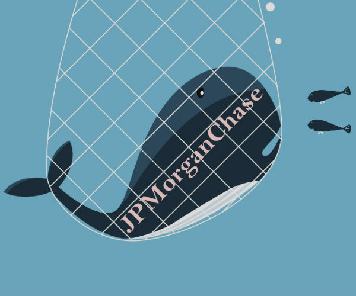

Kessler Topaz Secures a $150 Million Recovery for Shareholders
in JPMorgan Chase & Co. Securities Class Action'
in JPMorgan Chase & Co. Securities Class Action'
April 17, 2017
Return to All News

Court-appointed Co-Lead Counsel, Kessler Topaz, has negotiated a $150 million cash settlement on behalf of a certified class of investors with defendant JPMorgan Chase & Co. (“JPMorgan”). The settlement resolves claims arising out of the 2012 trading and risk management activities of JPMorgan’s Chief Investment Office (“CIO”) and its so-called “London Whale” trades.
The case was initially filed in the United States District Court for the Southern District of New York in July 2012. In August 2012, the Court appointed Kessler Topaz, along with two other law firms, to serve as Lead Counsel in the action. In November 2012, Kessler Topaz filed a Consolidated Amended Class Action Complaint on behalf of the Lead Plaintiffs, including its client, Sjunde AP-Fonden or AP7, and the putative class of JPMorgan investors. Following investigations by various governmental entities, including the Permanent Subcommittee on Investigations of the U.S. Senate, Kessler Topaz amended the operative complaint by filing a Second Amended Consolidated Class Action Complaint in April 2013 (“Complaint”).
The Complaint asserted claims pursuant to Sections 10(b) and 20(a) of the Securities Exchange Act of 1934 and Rule 10b-5 promulgated thereunder against JPMorgan and certain of its officers during the relevant period. The Complaint alleged that defendants violated the federal securities laws by issuing false and misleading statements regarding the activities of the CIO and the extent of the risk posed by the London Whale trades within the CIO’s synthetic credit portfolio. Specifically, the Complaint alleged that on April 13, 2012, when defendants characterized the London Whale trading as customary “hedging” activity, they knew or recklessly disregarded that the London Whale trades were undisclosed, high-risk proprietary trades. Furthermore, the Complaint alleges that when analysts began expressing concern over the London Whale trading activities, JPMorgan CEO James Dimon fraudulently dismissed them as a "complete tempest in a teapot." The alleged false and misleading statements caused the price of JPMorgan common stock to be artificially inflated during the Class Period and when it was disclosed in May 2012 that the London Whale trades had lost over $2 billion, the price of the stock declined significantly, causing damage to investors.
Following more than three years of hard-fought litigation, including the Court’s certification of a class of investors, the parties agreed to mediate the case before the Honorable Daniel H. Weinstein (ret.). The mediation process, which commenced in June 2015, was successful and culminated in the settlement. The parties filed the settlement papers on December 18, 2015 and are awaiting preliminary approval of the settlement from the Court.
Following preliminary approval of the settlement, all potential settlement class members will be notified of their status in the class by a Court-appointed claims administrator and Kessler Topaz will petition the Court for final approval of the settlement. Information concerning the settlement can be found at www.jpmorgansecuritieslitigation.com.
For more information, please contact:
Darren J. Check, Esquire
dcheck@ktmc.com
(610) 822-2235
The case was initially filed in the United States District Court for the Southern District of New York in July 2012. In August 2012, the Court appointed Kessler Topaz, along with two other law firms, to serve as Lead Counsel in the action. In November 2012, Kessler Topaz filed a Consolidated Amended Class Action Complaint on behalf of the Lead Plaintiffs, including its client, Sjunde AP-Fonden or AP7, and the putative class of JPMorgan investors. Following investigations by various governmental entities, including the Permanent Subcommittee on Investigations of the U.S. Senate, Kessler Topaz amended the operative complaint by filing a Second Amended Consolidated Class Action Complaint in April 2013 (“Complaint”).
The Complaint asserted claims pursuant to Sections 10(b) and 20(a) of the Securities Exchange Act of 1934 and Rule 10b-5 promulgated thereunder against JPMorgan and certain of its officers during the relevant period. The Complaint alleged that defendants violated the federal securities laws by issuing false and misleading statements regarding the activities of the CIO and the extent of the risk posed by the London Whale trades within the CIO’s synthetic credit portfolio. Specifically, the Complaint alleged that on April 13, 2012, when defendants characterized the London Whale trading as customary “hedging” activity, they knew or recklessly disregarded that the London Whale trades were undisclosed, high-risk proprietary trades. Furthermore, the Complaint alleges that when analysts began expressing concern over the London Whale trading activities, JPMorgan CEO James Dimon fraudulently dismissed them as a "complete tempest in a teapot." The alleged false and misleading statements caused the price of JPMorgan common stock to be artificially inflated during the Class Period and when it was disclosed in May 2012 that the London Whale trades had lost over $2 billion, the price of the stock declined significantly, causing damage to investors.
Following more than three years of hard-fought litigation, including the Court’s certification of a class of investors, the parties agreed to mediate the case before the Honorable Daniel H. Weinstein (ret.). The mediation process, which commenced in June 2015, was successful and culminated in the settlement. The parties filed the settlement papers on December 18, 2015 and are awaiting preliminary approval of the settlement from the Court.
Following preliminary approval of the settlement, all potential settlement class members will be notified of their status in the class by a Court-appointed claims administrator and Kessler Topaz will petition the Court for final approval of the settlement. Information concerning the settlement can be found at www.jpmorgansecuritieslitigation.com.
For more information, please contact:
Darren J. Check, Esquire
dcheck@ktmc.com
(610) 822-2235